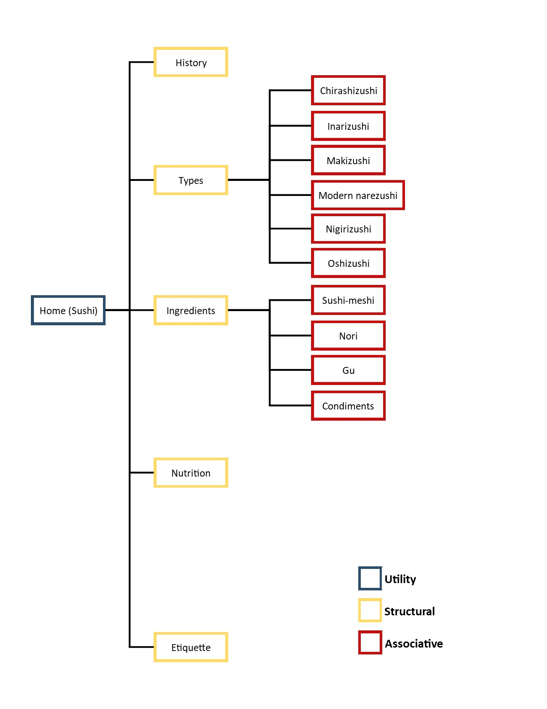
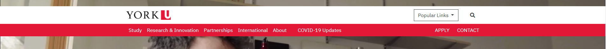
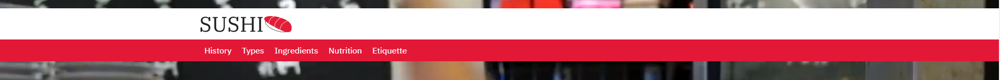
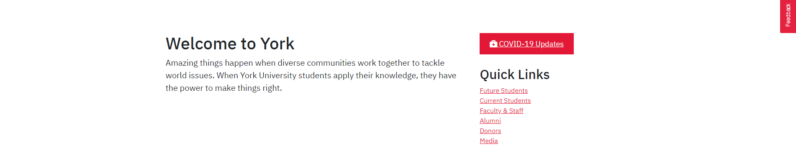
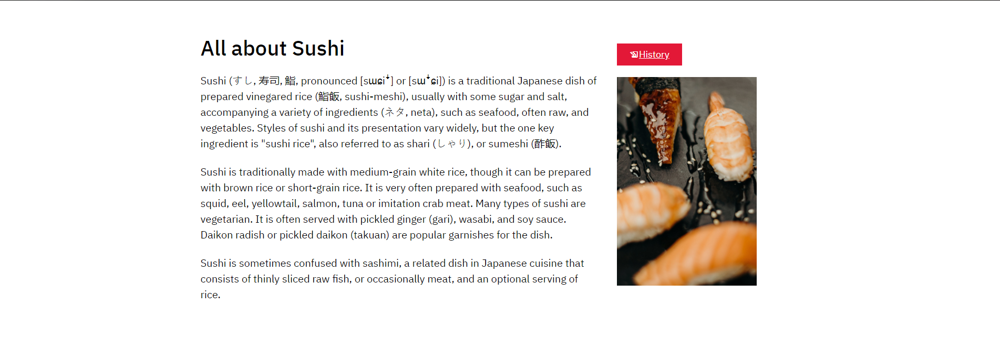
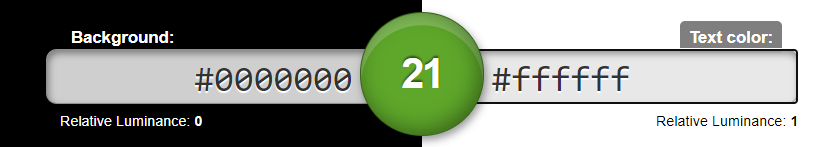
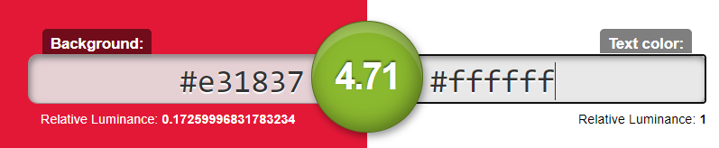
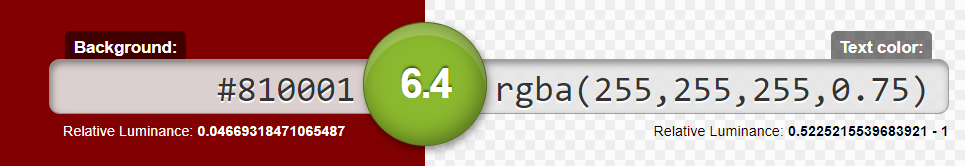

The topic I chose for the project was Sushi.
From a total of 15 direct subsections of content, I narrowed the architecture down to 5 direct structural subsections, with 10 associative subsections total. This was done by narrowing down which subsections are the most relevant to the topic, would best represent it, and would look best on a structured site.
Utility navigation on the site would just be Sushi, the home page. This can be accessed on any page on the site, accessible from the logo in the header and footer of the page. Another possible utility navigation is the social media/contact icons (not pictured) seen within the footer. These are not relevant to the site IA/structure, but would be utility navigations regardless, as they are accesible on any page.
Structural navigations on the site would be the 5 direct subsections I chose for the site. Namely, these are History, Types, Ingredients, Nutrition, and Etiquette. These are accesible from the home page in the navigation bar at the top. These are structural as they would branch out into the associative subsections, and are direct subsections on the Wikipedia page.
Associative navigations on the site would be the subsections of each Structural category. This is seen in my inner page, Types, where its associative navigations are Chirashizushi, Inarizushi, Makizushi, Modern narezushi, Nigirizushi, and Oshizushi. These associative navigations are visible/accessible only on their respective structural pages, within the inner page navigation bar. The only other structural page with associative navigations would be Ingredients.
The website I chose to mock up is the York University website. I chose this website as I really enjoyed its design, and felt that it would match the feel of the topic I chose. The logo, fonts, and color scheme would match well with the contents of my topic. I felt that a website comprised of red, white, and black would match a site about Sushi, as red and black could represent sushi ingredients (the fish being red as seen in my website's logo), and even matches the color scheme of Japan, the country of Sushi's origin. The site also incorporates a video banner, which is something I wanted to showcase on my website, as it would convey more than images.
All screenshots taken on a monitor resolution of 1920x1080.
 My site features a similar navigation bar as York's, a sticky navbar that starts just below the top of the page, but moves down with the page as the user scrolls down. The first images show the home page navbar, whereas the second pages show the inner page navbars. The home page navbar has the logo scroll down with it, whereas the inner pages only have the page title and associative navigation be sticky elements. Titles are clickable, but simply link to the relevant structural page. The inner navbar elements have brighter red and white background/text colors upon hover.
Similarly, the footers are both black/red backgrounds that showcase white text and icons. They both showcase white versions of the logo. Because of this I had to make two Sushi logos in Illustrator that contrast with the white background in the header, and the red background in the footer. The logo is clickable, and links back to the homepage. Material icons only contain the facebook icon for social media, so instead I simply added icons that are relevant to contact/connection with businesses. I used divs to evenly distribute and center content.
 Lastly, we have the "spotlight" sections of the site. My site similarly uses containers of 1140px width to keep content within the page. My site also uses divs of width 66.6% and 33.3% within the container to display content beside each other. I mocked up the button used for COVID-19 updates to link to the History page on my site. I used a material icon to show the icon of pen on paper for it. Both buttons are red with underlined text, and have the entire box clickable.
WCAG2.0 has a large variety of guidelines to meet for a website to conform to levels A, AA, and AAA. My website conforms to WCAG Level AA requirements in numerous ways.
One such way is in the aspect of color contrast ratios. Text within the body of the page is 20px, and the foreground and background colors are simply #000000 and #ffffff respectively, for a contrast ratio of 21:1. This far surpasses the expected minimums of 3:1 for small text and 4.5:1 for large text. Similarly, this also applies for the home navigation bar (#ffffff foreground and #e31837 background) for a ratio of 4.71:1, the inner navigation bar (rgba(255,255,255,0.75 and #810001 background) for a ratio of 6.40:1, and the inner navigation bar on hover (#ffffff and #e31837 background) with a ratio of 4.71:1. All contrast ratios on my page meet the small and large text requirements for both AA and AAA, with the exception of 4.71:1 not meeting AAA for small text. However, this page does not have any small text under that specific contrast. Thus, my page meets AA standards for contrast, and in fact even passes AAA.
  Contrast ratios checked at contrast-ratio.com, in order to take rgba values into account.
Another way that my website meets the guidelines for level AA is through its Headings and Labels. Level AA requires websites to effectively use headings in a structured way, also labelling them in a way such that users can quickly skim over headings in order to find the content they are looking for. My website meets this guideline as headings simply describe the contents of the page from the first word(s). The home page simply has an h1 “All about Sushi”, inner page has h1s “Types” and “Types of Sushi”, and an h3 of “Connect with Sushi” on all pages. All headings are also contained within their respective structured sections of the pages, with h1 “Types” being within the header before the navigation of the inner page, h1 “Types of Sushi” being in the body, and “Connect with Sushi” being an h3 of the page but located within the footer, allowing for h2s to be added that are more relevant than the connect sections. There are no labels on my website to be evaluated, such as text box labels.
{kind=link}
{kind=link}